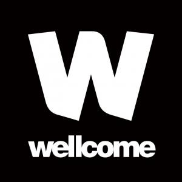

| Home | Registration | Program | Directions | Flyer |
POND 2024 is the latest scientific meeting in the series of "POND modelling" meetings started by the EuroPOND consortium in 2016.
For all things POND, please check out the UCL POND research group and POND Models webpage.
POND 2024 is hosted by the POND research group at UCL.
Organisers: Anna Schroder, Tiantian He, Isaac Llorente Saguer, Alex Young, Neil Oxtoby.
|  |